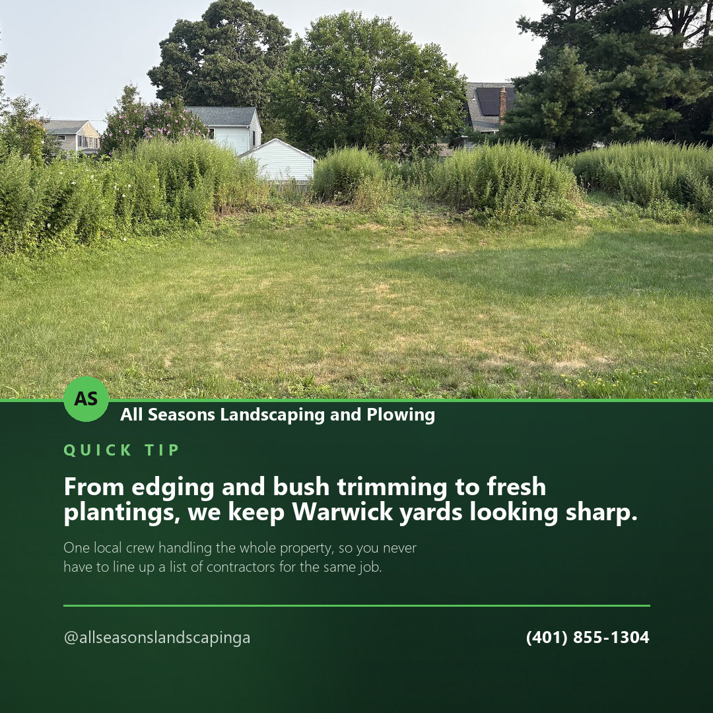
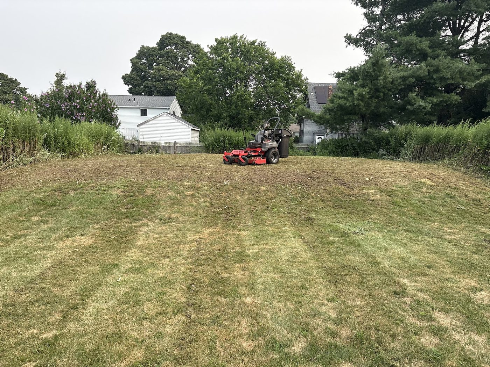
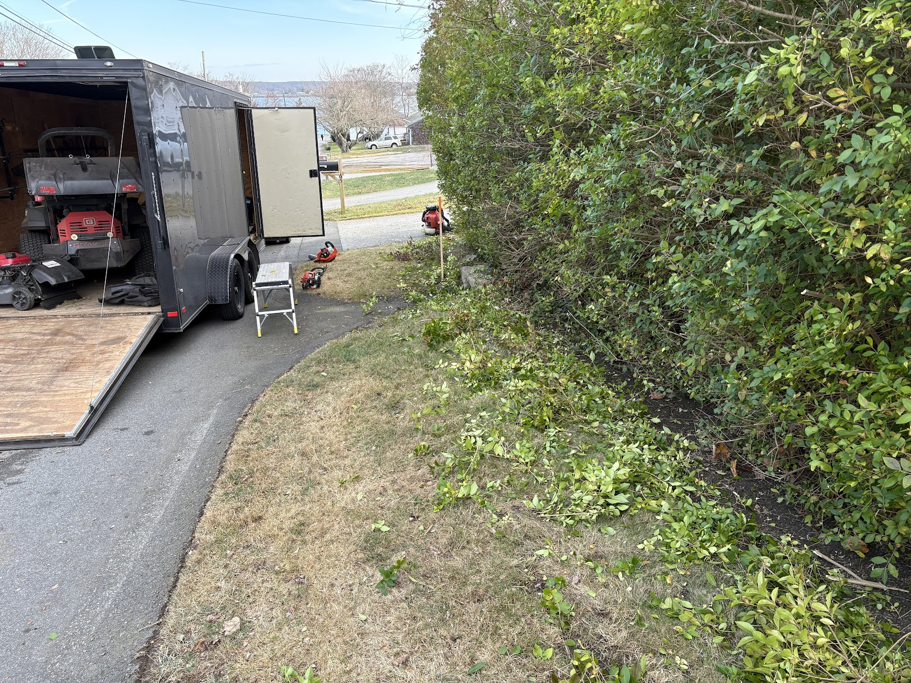
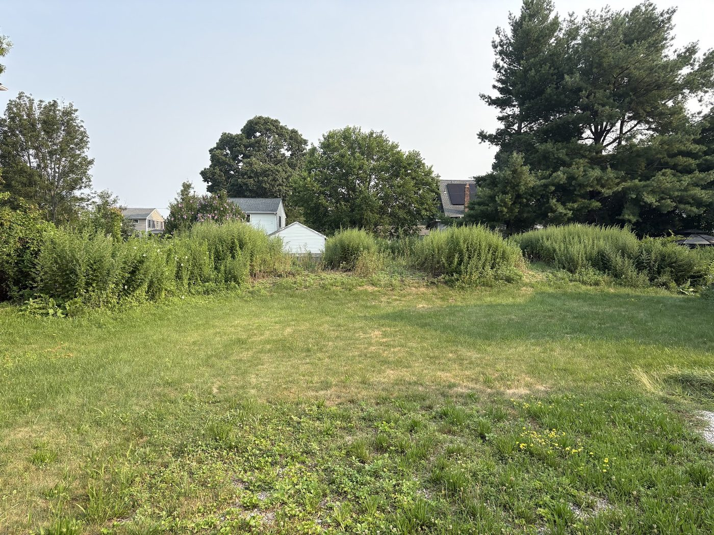

Service spotlight · Facebook
From edging and bush trimming to fresh plantings, we keep Warwick yards looking sharp. One local crew handling the whole property, so you never have to line up a list of contractors for the same job.
All Seasons Landscaping and Plowing looks after Warwick properties for the whole year — lawn maintenance, plantings, edging and bush trimming while things are growing, leaf cleanup when they stop, and snow removal when the season turns.
“Whether you are looking for help with a one-time project, or ongoing lawn care and maintenance, we can help.” That is how they put it on their own site. Here is the same six-service list, laid out by when the phone usually rings about each one.
Plenty of landscapers disappear in December and turn up again in April, which leaves you finding somebody new for the driveway every winter and hoping they answer at five in the morning. This is one outfit doing both halves of the year, so the person who knows where your beds and your edging are is the same one deciding where the snow goes.

“Maintaining our property grounds on top of running my business was unsustainable with the amount of work involved. Bringing Eddy on board was a true game changer. He works incredibly hard and the property has never looked better!”


A one-time project or ongoing maintenance — say which, say roughly how big the property is, and say whether you want the driveway covered come winter while you are at it.
(401) 855-1304Content